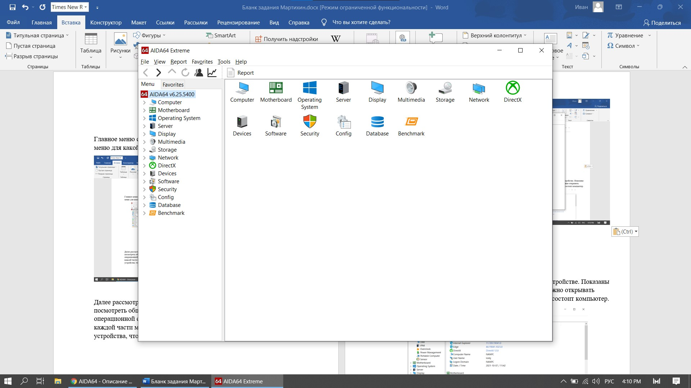
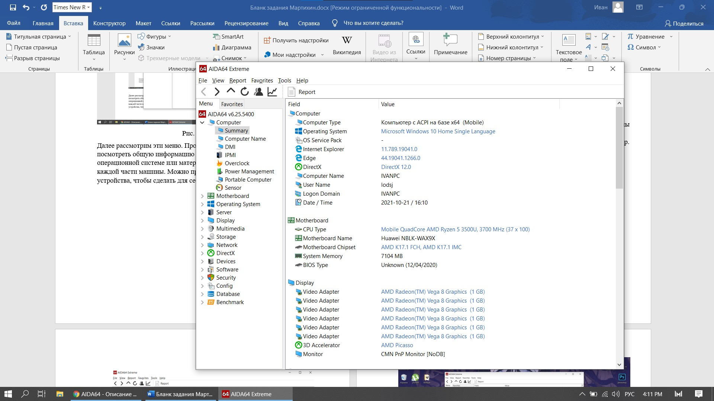
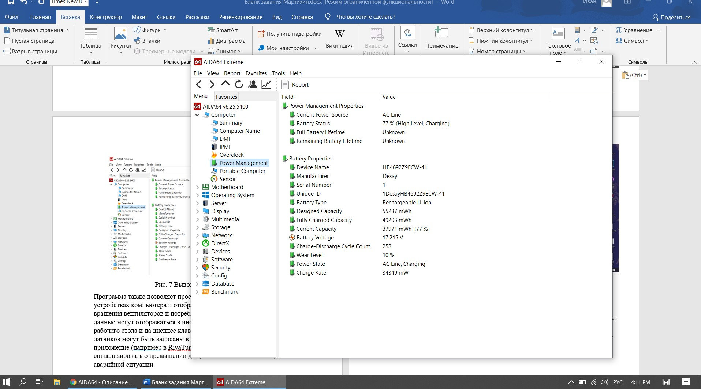
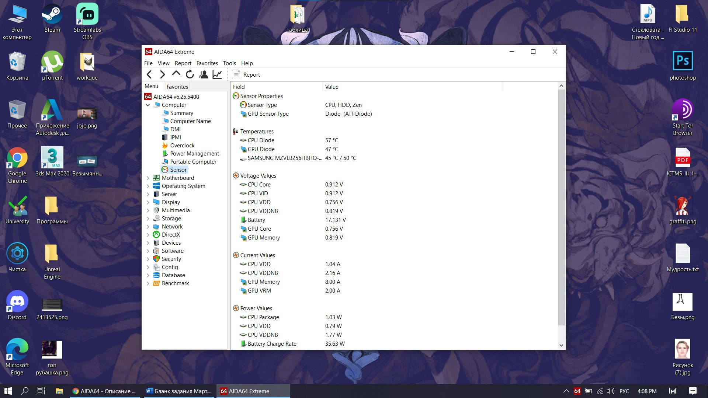

1 AIDA64 (3.80) |
|
AIDA64 — утилита FinalWire Ltd. для тестирования и идентификации компонентов
персонального компьютера под управлением операционных систем Windows, предоставляющая детальные сведения об аппаратном и программном обеспечении.
Является последовательницей утилиты Everest.
Установка программы состояла из всего 3х шагов: принятия настроек, выбора устанавливаемой версии и места куда все будет инсталлировано. |
 |
| Рис. 1 Первый шаг установки |
| Главное меню состоит иконок, которые переводят нас в индивидуальные меню для какой-либо из частей нашего пк: |
|  |
| Рис. 2 Главное меню |
| Далее рассмотрим эти меню. Проверка состояния пк в общем – позволяет посмотреть общую информацию о машине.
Будь то информация об операционной системе или материнской плате, а также провести стресс тесты каждой части машины.
Можно провести проверку состояния батареи устройства, чтобы сделать для себя какие-нибудь выводы. |
 |
| Рис. 3 Главные функции |
| Рис. 4 – Показывает нам полную информацию о нашем устройстве. Показаны нам очень точные данные о компонентах системы и
ненужно открывать системный блок, что бы узнать из каких комплектующих состоит компьютер. |
|  |
| Рис. 4 Информация о ПК |
|  |
| Рис. 5 Вывод информации о батарее |
| Программа также позволяет просмотреть различные датчики на внутренних устройствах компьютера и отображает температуру,
напряжение, скорость вращения вентиляторов и потребление электроэнергии. Помимо прочего, эти данные могут отображаться
в иноке с системном трее, OSD-панеле, гаджете рабочего стола и на дисплее клавиатуры Logitech G15/G19. Значения датчиков
могут быть записаны в журнал или экспортированы во внешнее приложение (например, в RivaTuner и Samurai). Также AIDA64 может
сигнализировать о превышении допустимых значений и о создавшейся аварийной ситуации. |
|  |
| Рис. 6 Данные сенсоров устройства |
| Вывод: Программа обновляется каждый год, потому информация об пк будет актуальной. Много функций для диагностики абсолютно
каждой части пк. Установка была удобной и быстрой, главное меню удобно в использовании. |